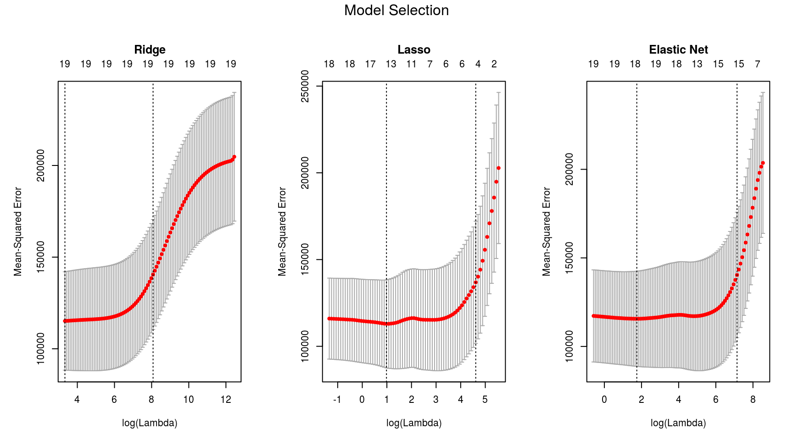
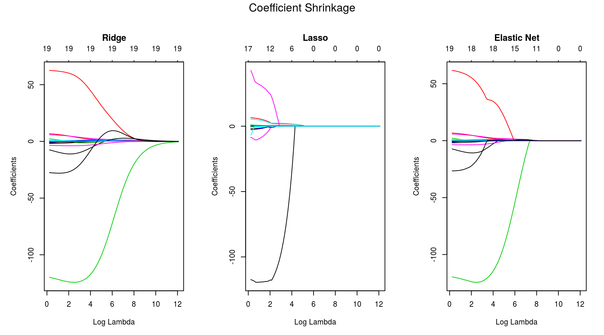

Regularization
Overview
Demonstrate various regularization techniques used in regression analysis.
Ordinary Least Squares
OLS regression fits a linear model with coefficients \(w = (w_1, ..., w_p)\) to minimize the RSS between the observed and the predicted responses.
Mathematically, it tries to minimize the objective function:
\[
\newcommand{\norm}[1]{\left\lVert#1\right\rVert}
\underset{w}{min\,} \norm {X w - y}_2^2
\]
Ridge Regression
Ridge regression imposes a penalty on the size of coefficients. Here, \(\alpha \geq 0\) is a complexity parameter that controls the amount of shrinkage of coefficients.
Objective to minimize:
\[
\underset{w}{min\,} {\norm {X w - y}_2^2 + \alpha\, \norm w_2^2}
\]
Lasso Regression
Mathematically, it consists of a linear model trained with \(\ell_1\) prior as regularizer. The lasso estimate solves the minimization of the least-squares penalty with \(\alpha ||w||_1\) added, where \(\alpha\) is a constant and \(||w||_1\) is the \(\ell_1\)-norm of the parameter vector.
Objective to minimize: \[ \underset{w}{min\,} { \frac{1}{2n_{samples}} \norm {X w - y}_2 ^ 2 + \alpha\, \norm w_1} \]
Elastic Net Regression
ElasticNet is a linear regression model trained with \(\ell_1\) and \(\ell_2\) prior as regularizer. We control the convex combination of \(\ell_1\) and \(\ell_2\) using the \(\ell_1\)-ratio (\(\rho\)) parameter.
Objective to minimize:
\[
\underset{w}{min\,} { \frac{1}{2n_{samples}} \norm {X w - y}_2^2 + \alpha \rho \norm w_1 +\frac{\alpha(1-\rho)}{2} \norm w_2^2}
\]
Dataset
Major League Baseball Data from the 1986 and 1987 seasons.
model.data <- Hitters[complete.cases(Hitters),]
str(model.data)## 'data.frame': 263 obs. of 20 variables:
## $ AtBat : int 315 479 496 321 594 185 298 323 401 574 ...
## $ Hits : int 81 130 141 87 169 37 73 81 92 159 ...
## $ HmRun : int 7 18 20 10 4 1 0 6 17 21 ...
## $ Runs : int 24 66 65 39 74 23 24 26 49 107 ...
## $ RBI : int 38 72 78 42 51 8 24 32 66 75 ...
## $ Walks : int 39 76 37 30 35 21 7 8 65 59 ...
## $ Years : int 14 3 11 2 11 2 3 2 13 10 ...
## $ CAtBat : int 3449 1624 5628 396 4408 214 509 341 5206 4631 ...
## $ CHits : int 835 457 1575 101 1133 42 108 86 1332 1300 ...
## $ CHmRun : int 69 63 225 12 19 1 0 6 253 90 ...
## $ CRuns : int 321 224 828 48 501 30 41 32 784 702 ...
## $ CRBI : int 414 266 838 46 336 9 37 34 890 504 ...
## $ CWalks : int 375 263 354 33 194 24 12 8 866 488 ...
## $ League : Factor w/ 2 levels "A","N": 2 1 2 2 1 2 1 2 1 1 ...
## $ Division : Factor w/ 2 levels "E","W": 2 2 1 1 2 1 2 2 1 1 ...
## $ PutOuts : int 632 880 200 805 282 76 121 143 0 238 ...
## $ Assists : int 43 82 11 40 421 127 283 290 0 445 ...
## $ Errors : int 10 14 3 4 25 7 9 19 0 22 ...
## $ Salary : num 475 480 500 91.5 750 ...
## $ NewLeague: Factor w/ 2 levels "A","N": 2 1 2 2 1 1 1 2 1 1 ...Fitting the Models
We will use the R glmnet package for regressing the Salary of the baseball players. In glmnet, the penalty on the coefficient vector is defined as \[
\frac{1-\alpha}{2} \norm {\beta_j}_2^2 + \alpha\, \norm {\beta_j}_1,
\] where \(\alpha=1\) is the lasso penalty, and \(\alpha=0\) the ridge penalty. For \(0 < \alpha < 1\) you get the elastic net model.
x <- model.matrix(Salary ~., model.data)[, -1]
y <- model.data$Salary
grid <- 10^seq(0.1, 5.25, length = 100)
ridge.mod <- glmnet(x, y, alpha = 0, lambda = grid)
cv.ridge <- cv.glmnet(x, y, alpha = 0)
lasso.mod <- glmnet(x, y, alpha = 1, lambda = grid)
cv.lasso <- cv.glmnet(x, y, alpha = 1)
elastic.mod <- glmnet(x, y, alpha = 0.05, lambda = grid)
cv.elastic <- cv.glmnet(x, y, alpha = 0.05)ridge.mod$lambda[50]## [1] 502.3543Here are the coefficients when \(\lambda = 502.3542734\) for ridge regression:
coef(ridge.mod)[,50]## (Intercept) AtBat Hits HmRun Runs
## 32.28886473 0.10294692 0.73816726 0.97336679 0.99928237
## RBI Walks Years CAtBat CHits
## 0.87005503 1.45357384 2.18451382 0.01118123 0.05121007
## CHmRun CRuns CRBI CWalks LeagueN
## 0.36720312 0.10245821 0.10754182 0.06687056 17.25729011
## DivisionW PutOuts Assists Errors NewLeagueN
## -65.35634421 0.13934708 0.02059125 -0.96259342 9.37464578To predict ridge regression coefficients for a new value of \(\lambda\), say 50:
coef(ridge.mod, s = 50)[1:20,]## (Intercept) AtBat Hits HmRun Runs
## 4.834785e+01 -3.541365e-01 1.953935e+00 -1.287662e+00 1.155112e+00
## RBI Walks Years CAtBat CHits
## 8.085495e-01 2.710330e+00 -6.215391e+00 5.982191e-03 1.070891e-01
## CHmRun CRuns CRBI CWalks LeagueN
## 6.292899e-01 2.180264e-01 2.156013e-01 -1.491177e-01 4.586129e+01
## DivisionW PutOuts Assists Errors NewLeagueN
## -1.182266e+02 2.501814e-01 1.209485e-01 -3.276847e+00 -9.426409e+00Minimum \(\lambda\) and mean CV error for ridge regression:
c(cv.ridge$lambda.min, min(cv.ridge$cvm))## [1] 28.01718 115163.60638

Remarks
Lasso imposes sparsity among the coefficients and is great for recovering sparse signals or, when there are large number of variables. Ridge limits the size of the coefficient vector, and hence can reduce overfitting through a better compromise between bias-variance. Elastic Net is a mix of the former two regularization techniques, and hence achieves both shrinkage and automatic feature selection.